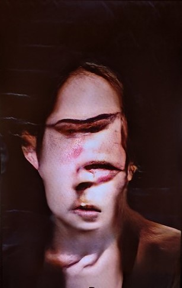

UNCANNY VALLEY
"Uncanny Valley, o Valle Inquietante es un término utilizado para referirse a la situación en donde una entidad artificial que asemeja en gran medida a un ser humano, lo que genera repulsión para la audiencia. Esta caída en la respuesta anímica es un punto crítico en la teoría de Masahiro Mori en 1970, de la cual se basa el artista detrás de Uncanny Mirror"

UNCANNY MIRROR

El proyecto Uncanny Mirror de Mario Klingemann se centra en indagar cómo la inteligencia artificial transforma la percepción de la identidad de las personas. Se utilizan imágenes y algoritmos de
reconocimiento facial para cambiar la apariencia de los seres humanos y crear una experiencia visual única. A partir de los datos recopilados, la instalación genera imágenes distorsionadas y abstractas de las
personas. Estas distorsiones pueden modificar los rasgos, las expresiones y otros elementos característicos de las personas, lo que genera una reflexión sobre la identidad y la forma en que nos percibimos a
nosotros mismos. Además, cuestiona la naturaleza de la identidad y la autenticidad en la era de la tecnología digital y la inteligencia artificial, provocando en nosotros el "efecto de espejo" en la
psicología.
Este proyecto artístico y digital ocupa la inteligencia artificial para distorsionar o modificar la apariencia. Plantea cuestiones e interrogantes sobre la identidad y desafía la forma en que nos percibimos a
nosotros mismos. Uncanny Mirror tiene un impacto relevante en aspectos culturales y sociales al abordar temas como la identidad, tecnologías de reconocimiento facial y percepción visual. Puede generar una
reflexión profunda sobre cómo nos percibimos a nosotros mismos y cómo la tecnología puede afectar en nuestra percepción de la identidad.
UNCANNY MIRROR

Plantea preguntas sobre el uso que le estamos dando a la inteligencia artificial y el rumbo que está tomando. Toca temas como la privacidad y sus aspectos éticos en una realidad cada vez más impulsada por la
tecnología. A medida que las IA continúan desarrollándose es crucial preguntarse cómo pueden afectarnos moldeando nuestras identidades individuales y colectivas en la actualidad o a futuro. Al mostrar con cual
facilidad es manipulada la imagen de una persona lleva a cuestionarse la necesidad de límites para restringir y salvaguardar la privacidad y autonomía personal e individual. Este proyecto llama a la comprensión
de la identidad, promueve una mayor conciencia sobre la privacidad y cuestiona el papel de la inteligencia artificial en nuestras vidas.
MARIO KLININGEMANN

Mario Klingemann, nacido en 1970, en la ciudad de Laatzen, Alemania. En la época donde la inteligencia artificial no era más que ficción. Este siempre presentó un interés en los computadores y tecnología. Es un
programador autodidacta, siempre comunica su interés en conocer cómo las cosas funcionan por dentro. En su obra se observa un análisis del posible futuro del arte y como este va a interactuar de forma activa con el
observador. Él, conocido como “Quasimodo”, trabaja en redes neuronales, datos, códigos y algoritmos. Se considera un “pionero” en el uso de la computación y su aprendizaje. Como se mencionó anteriormente entre los
materiales que utiliza para sus obras y para llevarlas a cabo, se encuentra el código, las redes neuronales y los algoritmos. Su interés en la percepción humana, la teoría estética, y el funcionamiento interno de
sistemas se refleja en las temáticas que aborda con su arte. Uno de sus principales objetivos con el arte que crea, por medio de la programación y las máquinas inteligentes, permite crear arte de manera autónoma con una
mínima necesidad de intervención humana. Bajo el concepto de abrir una ventana para mirar hacia el arte del futuro. Algunas de la temáticas que se repiten en sus obras son; inteligencia artificial, el lenguaje profundo,
el arte generativo y evolutivo, la clasificación y visualización de datos. Esto se ve representado en sus obras experimentales como; Raster Fairy y StackBlur, las cuales utilizó como oportunidades para estudiar y
aprender los límites de la tecnología e idear su utilización futura en el arte. Los códigos de algunas de sus obras son publicados en Github, manteniéndose fiel a la idea de repartir el conocimiento. Algunas
investigaciones destacadas en su portafolio muestran los procesos creativos detrás de tres obras: The Order of Things, Mashub Baby! y Beyond the Blur, de las cuales hizo charlas individuales en su tiempo.
TRABAJOS
THE MISGENDERING MACHINES
El artículo discute la falta de representación y reconocimiento de las identidades de género no binarias, a través del reconocimiento facial, según la inteligencia artificial. Esto también se ve ligado en
gran parte del texto ya que habla sobre el campo de la Interacción Humano-Computadora (HCI), especialmente en el contexto de la tecnología de Reconocimiento Automático de Género (AGR). La relevancia de este
tema radica en la necesidad de una comprensión más amplia de cómo “HCI” considera el género en la investigación y el diseño, y cómo la tecnología puede excluir y perjudicar a las personas trans y no binarias.
El autor realizó un análisis de contenido de 58 artículos sobre “AGR” de las principales publicaciones de reconocimiento de patrones. El análisis reveló que la tecnología “AGR” opera en un modelo binario,
inmutable y fisiológico de género. Excluyendo y perjudicando a personas que son disidencias sexuales.

Keyes llama a una examinación crítica de “AGR” y sus posibles consecuencias para las personas trans y no binarias, así como a una comprensión más amplia de cómo “HCI” considera el género en la investigación y el
diseño. Este es un tema importante para el futuro y la actualidad, porque la inclusión y el reconocimiento de las identidades de género no binarias son cada vez más importantes en la lucha por la igualdad y la
justicia social. La tecnología de esta manera debe ser diseñada para incluir y representar a todas las personas, independientemente de su género. Destaca la necesidad de una mayor conciencia y entendimiento de
cómo la tecnología puede excluir y perjudicar a las personas no binarias.
OS KEYES
Os Keyes es une investigador y académico reconocide en el campo de la ética de la inteligencia artificial y la privacidad. Su trabajo se ha centrado en explorar los aspectos éticos y sociales de la tecnología,
especialmente en relación con la inteligencia artificial y el aprendizaje automático. Keyes ha llevado a cabo investigaciones rigurosas y ha publicado artículos académicos que abordan temas cruciales como la
vigilancia masiva, la discriminación algorítmica y la responsabilidad ética en el desarrollo y la implementación de la inteligencia artificial. Su trabajo ha contribuido a generar conciencia sobre la importancia de
la transparencia, la rendición de cuentas y la equidad en el uso de la IA en nuestra sociedad. Una de las áreas clave de investigación de Keyes es el estudio del impacto de las tecnologías emergentes en la justicia
social y cómo pueden perpetuar o agravar las desigualdades existentes. También ha examinado en detalle las preocupaciones relacionadas con la privacidad y cómo los algoritmos y la recopilación de datos pueden afectar
los derechos individuales y colectivos. A través de sus trabajos y presentaciones, Os Keyes ha contribuido significativamente al campo de la ética de la inteligencia artificial, promoviendo una reflexión crítica y
fomentando una mayor responsabilidad en el diseño, desarrollo y aplicación de la tecnología. Su enfoque centrado en la justicia y la equidad ha destacado la importancia de considerar los impactos éticos y sociales en
el ámbito tecnológico.
TRABAJOS
VINCULO
Ambos exploran cómo la inteligencia artificial afecta la percepción de la identidad de las personas. Uncanny Mirror (proyecto) lo hace distorsionando la apariencia de los humanos a través de un sistema de imágenes y
algoritmos de reconocimiento facial. Mientras que el artículo trata sobre cómo el reconocimiento facial automático tiene sus implicaciones con las comunidades disidentes. Tanto el artículo como el proyecto plantean
preocupaciones sobre los errores y sesgos que surgen de la tecnología de reconocimiento automático de género. Uno se enfoca en cómo puede llegar a distorsionar la apariencia de una persona, mientras que el otro
critica la clasificación errónea que les ofrecen estas tecnologías de reconocimiento. Ambos trabajos destacan la importancia de abordar los sesgos y las limitaciones en la tecnología y la inteligencia artificial para
garantizar que estas herramientas se utilicen de manera justa y equitativa, con una base de datos que tenga en consideración a diversos grupos étnicos, disidencias y minorías. Cabe recalcar que esto no es
responsabilidad de la máquina o inteligencia artificial si no de los prejuicios que previamente posea la base de datos utilizada por el/a programador/a/e
CONCLUSION
En resumen, ambos temas resaltan la importancia de considerar la inclusión y la representación en la tecnología. Cómo la tecnología puede excluir y perjudicar a ciertos grupos de personas. Se plantean preguntas sobre la
autenticidad y la representación en la era de la tecnología digital y la inteligencia artificial. Es importante que los investigadores y diseñadores conozcan las limitaciones de esta tecnología para que de esta manera no
se cometan prejuicios y discriminación. Incitan a un pensamiento crítico y trabajo para desarrollar tecnología inclusiva y representativa. La inteligencia artificial ha avanzado a una velocidad sorprendente en unos pocos
años, pese a esto, sus obras más antiguas siguen impresionando a día de hoy. Nos permite pensar en que es lo que nos hace humanos o qué consideramos humano. En última instancia nos hace reconsiderar nuestros prejuicios y
de qué manera debemos abordar su contenido y desarrollo para garantizar un futuro equitativo y ético en una sociedad cada vez más digitalizada y tecnológica.